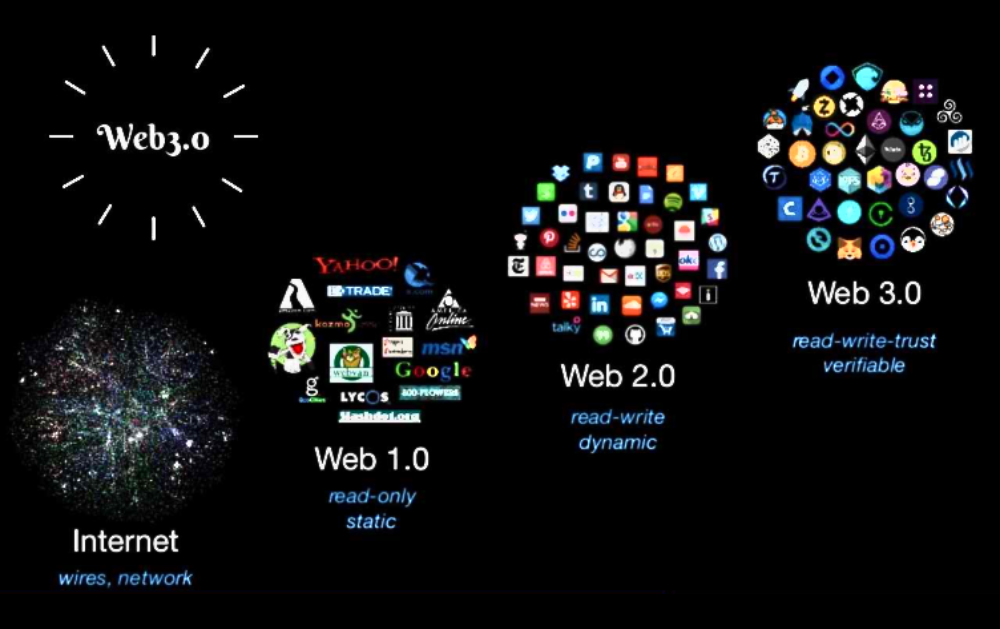
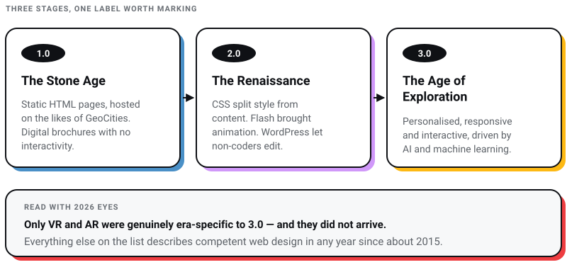
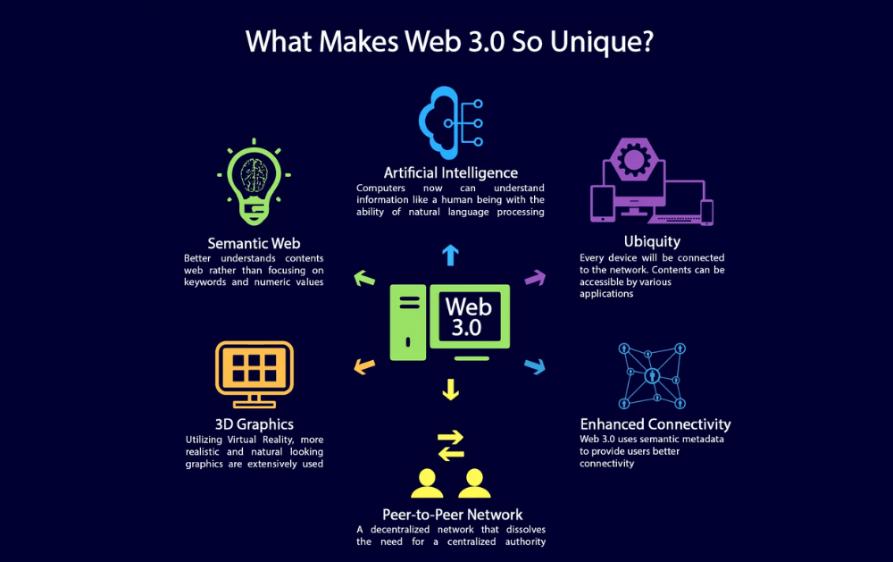
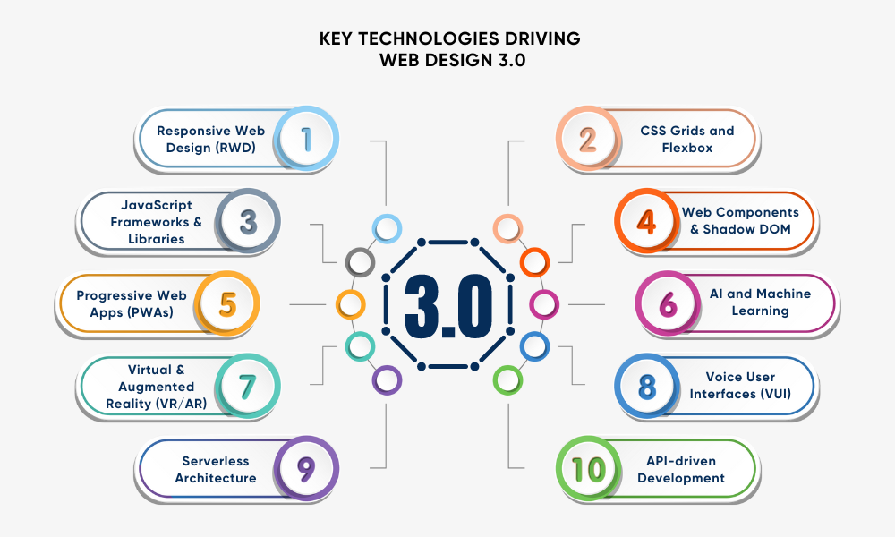
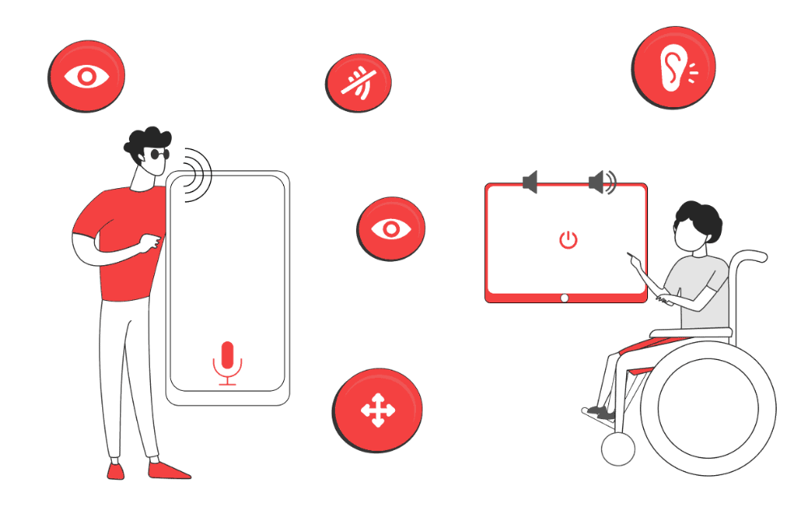
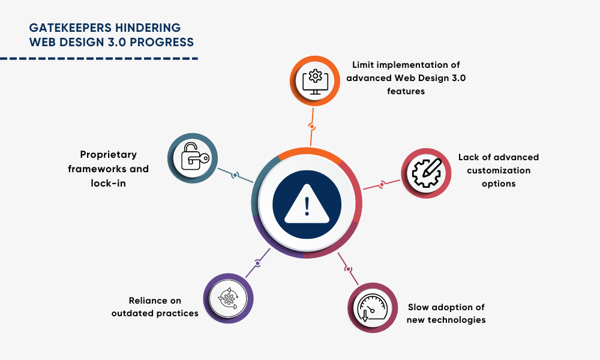
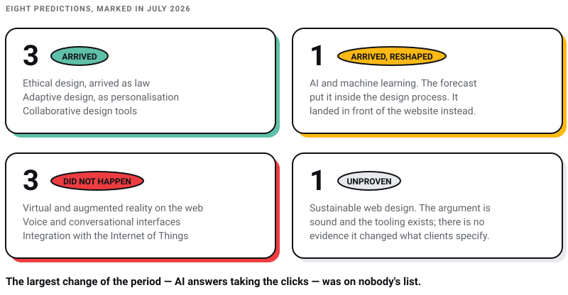

WEB DEVELOPMENT
WEB DEVELOPMENT
AI Website Builders vs Custom Development: Where the Shiny Tools Actually Break
AI website builders are fast, but are they right for your business? Discover where they excel, where they fail, and when custom development is the…

“Web Design 3.0” was a label borrowed from the Web3 moment. The illustration further down this page, the one captioned “what makes 3.0 unique”, comes from a blockchain company’s article about the Web3 technology stack, and it is credited underneath. That is not a coincidence. The label arrived promising decentralised websites running on blockchain, and the Web3 moment did not happen.
A label is cheap to refresh: change the year, swap the word blockchain for the word AI, republish. Plenty of pages do exactly that. The more useful exercise is to take the predictions the label carried, leave them in the words they were made in, and mark them. Some of what Web Design 3.0 promised arrived. Some arrived in a shape nobody described. Some did not happen at all. And the largest change of the period was on nobody’s list.
I run Pixel Street, a web design studio in Salt Lake, Kolkata, and we have been building for clients including Coca-Cola, ITC and Marico across the whole period this covers. That is the vantage point the scoring comes from. Every date and figure below was checked against a primary source on 31 July 2026, and where a prediction does not survive that check, it is struck out where it sits rather than quietly dropped.

Source: linkedin.com
Web design has come a long way since the inception of the internet.
Each stage of evolution has built upon the previous one, bringing with it new technologies and approaches that have shaped the way we interact with websites.

This early phase of web design was marked by static, text-heavy pages with minimal visual elements. HTML was the primary language used, and websites were often hosted on platforms like GeoCities. These sites were more akin to digital brochures, lacking interactivity or multimedia content.
As the internet matured, web design evolved to become more visually appealing and interactive. This period saw the rise of CSS, which allowed for greater control over the styling and layout of web pages. Flash emerged as a popular tool for creating animations and multimedia content, while content management systems like WordPress made it easier for non-technical users to create and update websites.
The claim being marked, in the terms it is usually made: Today, we’re amid Web Design 3.0, characterized by personalized, immersive, and highly engaging digital experiences. This era is driven by state-of-the-art technologies like AI, machine learning, and advanced web frameworks that facilitate cutting-edge design principles. Websites are now more dynamic, interactive, and responsive than ever before, catering to users’ unique preferences and behaviour.
Read that list with 2026 eyes and the only genuinely era-specific entry is VR/AR, which is scored further down and did not arrive. Everything else describes competent web design in any year since about 2015. That is the tell: a definition whose contents survive being detached from the label was never a definition of the label.

Source: 101blockchains.com
Web Design 3.0 is defined by an array of features that differentiate it from previous generations of web design. Here are some of its most notable characteristics:
While Web Design 3.0 offers many advantages, it also comes with its own set of limitations and challenges:

A variety of advanced technologies underpin the shift towards Web Design 3.0:
The standard treatment of this section runs to ten industries — e-commerce, education, healthcare, entertainment, travel, finance, real estate, news, nonprofits, government — with a paragraph each explaining that the industry in question can now offer personalised, interactive and immersive experiences. Ten paragraphs, one idea, nothing you could act on. A passage that says the same sentence about every industry is telling you nothing about yours. Here is the shorter version I am willing to defend.
Three-dimensional views, configurators and augmented-reality previews earn their build cost when the thing you sell is genuinely hard to judge from a photograph and a paragraph. A sofa in a room. A ring on a hand. A flat in a city the buyer cannot get to this month. In those cases the interaction removes a real doubt that was stopping a real purchase, and the doubt disappearing is something you can see in a returns rate.
Everywhere else it is decoration that costs load time, and unlike the decoration, the load time is measured. If you sell a service, a subscription, or anything a good photograph already explains, the money goes further on the writing.
Rearranging a homepage by visitor segment is costly to build, costlier to maintain, and close to impossible to test properly, because every later change has to be checked in every variant. Most of the businesses that ask us for it would get more out of rewriting the four pages everybody already visits. Personalisation earns its keep when you hold real behavioural data on returning users, which in practice means logged-in products. It earns very little when you are guessing from a first visit.

Source: divami.com
This is the one item on the list that not only arrived but hardened into law, and it is the item the label treated most vaguely. Complying with standards “like the Web Content Accessibility Guidelines” is not a standard. Here are the actual numbers.
WCAG 2.2 has been a W3C Recommendation since 5 October 2023, republished on 12 December 2024 with errata and no criterion added or renumbered. Both dates matter, because a supplier quoting only the later one is presenting a nearly three-year-old standard as a recent development. It is the version to build to. WCAG 3.0 is still a Working Draft: the March 2026 draft says in its own front matter that it is inappropriate to cite it as anything other than work in progress, so anyone selling you WCAG 3.0 compliance is selling you an unfinished document. The European Accessibility Act has applied since 28 June 2025, and it reaches a shop run from Kolkata that sells to consumers in the European Union, because the obligation follows the market rather than the office address. The full working-out is in our guide to website accessibility compliance.
Two criteria added in 2.2 catch design teams out, because they change layout rather than markup:
The rest of the list is sound:
Colour contrast and legibility: Prioritizing legible typography and adequate color contrast for users with low vision or color blindness.
Keyboard navigation: Supporting keyboard-only input with proper focus indicators and logical tab order for easy navigation.
Screen reader compatibility: Employing semantic HTML, proper heading structures, and descriptive alternative text for better screen reader interpretation.
Adaptive and responsive design: Ensuring seamless functionality across devices, screen sizes, and orientations, catering to users with motor impairments and assistive technologies.
Captions and transcripts: Providing captions for video and audio content, as well as transcripts, to enhance accessibility for deaf or hard-of-hearing users.
Customizable options: Allowing users to adjust the font size, colors, and other visual elements to suit their preferences and needs.

I should declare an interest before this section. I sell custom web design for a living, so of course I have opinions about website builders. Here is the honest version, including the part that is inconvenient for me.
Builders are good now. A small business that needs five pages and a working contact form will often get a faster, cheaper and more accessible result from a modern builder than from a cheap agency, and pretending otherwise is a sales pitch rather than an argument. The long comparison is in AI website builders versus custom development, and the shorter one in template versus custom web design.
The objection that survives is not about features. It is about ownership. I lost two companies before Pixel Street, and the lesson that outlived both is that you never build your main asset on ground somebody else controls. Your website is supposed to be the one property you fully own. A builder subscription quietly turns it back into a lease, on terms reviewed by someone who is not you.
Five complaints get made against website builders in arguments like this one. Two of them no longer hold, and they are worth striking out in public rather than dropping quietly.
Two stand up. The fifth, lack of advanced customisation, is the template complaint wearing a different hat, so it is folded into the second one here.
Web Design 3.0 is continuously evolving, with new technologies, techniques, and design principles shaping the way we experience the digital world. As we look towards the future, several trends are likely to drive the next wave of innovation in web design:
Those eight were the industry’s bets on where web design was going, and the wording above is left as the bets were made. A forecast can be scored. Here is where each one stands in July 2026.
| What was predicted | Where it stands in July 2026 |
|---|---|
| AI and machine learning in web design | Arrived, then went somewhere nobody described. The forecast imagined AI inside the design process. The consequential thing happened in front of the website instead, and it has its own section below. |
| Virtual and augmented reality | Did not happen on the web. WebVR is deprecated, and Mozilla’s own documentation gives the reason without flinching: it “was never ratified as a standard, was implemented and enabled by default in very few browsers and supported a small number of devices.” Its successor, WebXR, reaches 75.53% of users, and the gap is not obscure browsers. Safari on iOS does not support it at all; Safari on desktop and Firefox both leave it off by default. |
| Voice and conversational interfaces | Did not happen. Google turned off the developer platform for it. Its sunset notice reads: “All Conversational Actions will be removed, and will no longer be available to users or developers,” with the turndown on 13 June 2023. Voice went into assistants and then into chat. It did not become a layer of web design. |
| Ethical design and data privacy | Arrived as law rather than as a movement. Nobody adopted ethical design because it was ethical. They adopted it because a regulator gave it a date, which is what happened to accessibility earlier on this page. |
| Sustainable web design | Unresolved. The argument is sound and the tooling exists. I have no evidence that it changed what clients specify, and I am not going to claim otherwise. |
| Adaptive, context-aware design | Arrived as personalisation, which I argue against earlier on this page. The prediction came true in the most expensive available form. |
| Integration with the Internet of Things | Did not happen for web design. Connected devices grew. They did not become a surface anybody designs web pages for. |
| Collaborative design tools | Arrived, and it is the least glamorous item on the list. Multiplayer browser-based design turned out to matter more to how our work gets done than VR, voice and IoT combined. The forecast that landed hardest was the boring one. |
Three of eight arrived, one arrived in a form the forecast would not recognise, three did not happen, and one is unproven. That is a fairly ordinary hit rate for a technology forecast, and it is exactly why I would not build a studio around one.

The largest change to how people reach websites in this period is not on the list above, is not in the characteristics list, and did not appear in anybody’s account of what Web Design 3.0 was going to be.
Google began rolling out AI Overviews to everyone in the United States on 14 May 2024, saying hundreds of millions of users would have access that week and that it expected to reach over a billion people by the end of the year. The consequence for anybody who owns a website is measurable. Pew Research Center, tracking 900 US adults across 68,879 Google searches, found users clicked a result on 8% of visits where an AI summary appeared, against 15% of visits without one.
So the future of web design was being described in terms of headsets and voice commands at exactly the moment the search results page stopped sending people to websites. Forecasts fail in the direction nobody is looking, and I have no reason to think mine are better.
The instructive part is what the fix is not. Google’s own generative-AI guidance of 15 May 2026 says optimising for AI search “is optimizing for the search experience, and thus still SEO”, and puts content people find “unique, compelling, and useful” above every other suggestion in the document. No new technology stack. No new version number. The thing that survives a machine summarising your page is having said something the machine could not have assembled from ten other pages. We work through the practical side in our guide to AI search optimisation and set the acronyms against each other in AEO versus GEO versus SEO.
Here is where I land, having marked all eight. The version number was never the useful part. Web Design 3.0 borrowed its confidence from a technology movement that did not arrive, and a studio that had built its strategy around the label rather than around the work would have spent those years chasing decentralisation and headsets instead of learning to build fast, accessible sites.
What actually decides whether a website works has barely changed, and none of it is fashionable. Does it say something only you could say. Does it stay fast and stable on a mid-range phone on a poor connection. Can a person find what they came for and act on it without being taught. Can somebody using a screen reader, or a keyboard, or a hand that shakes, get the same result as everybody else. Those four questions outlived every trend on this page and they will outlive the next label too.
The honest way to read any guide that names an era, this one included, is as a set of bets rather than a set of facts. The eight above are marked. If you want a website judged on the four questions rather than on a version number, that is the work we do at Pixel Street in Salt Lake, Kolkata, for brands including Coca-Cola, ITC and Marico.
12 min read 11 cited sources WEB DEVELOPMENT
Author
Khurshid Alam is the founder of Pixel Street, an AI-native design & development studio. Design thinking on weekdays and spreadsheets on weekends.
He writes about growth, design, and AI, mostly because someone has to say the quiet parts out loud.
WEB DEVELOPMENT
AI website builders are fast, but are they right for your business? Discover where they excel, where they fail, and when custom development is the…
 Digital Marketing
Digital Marketing
Learn about AEO vs GEO vs SEO. Discover what changed with AI search, what still matters, and how to optimize for Google AI Overviews, ChatGPT, and…
 Digital Marketing
Digital Marketing
Want ChatGPT to recommend your brand? Learn how AI chooses businesses, where citations come from, and practical ways to increase your visibility.
 Web Design
Web Design
A client asked me this on a call last month: “Khurshid, everyone just asks ChatGPT now. Do we even need a website anymore?” He runs a business doing…